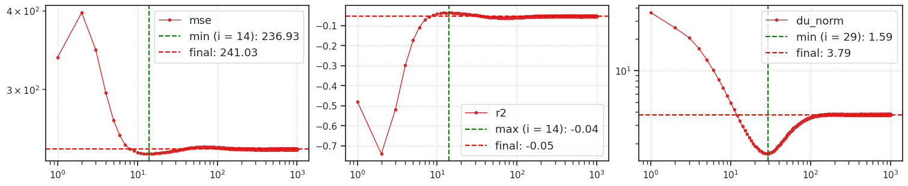
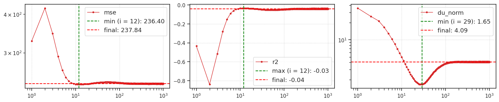
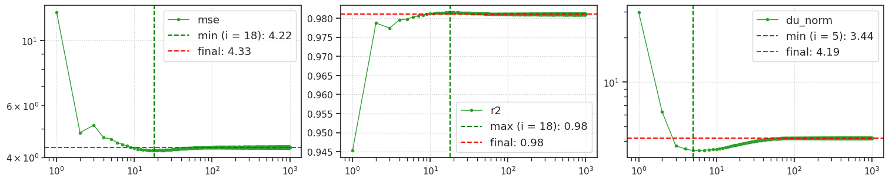
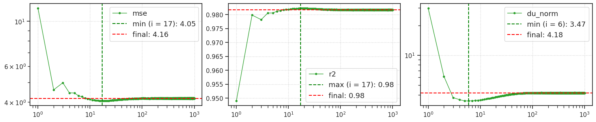
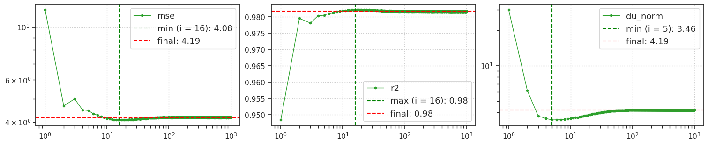
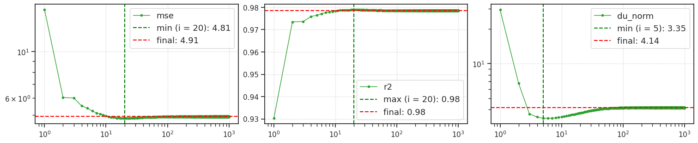
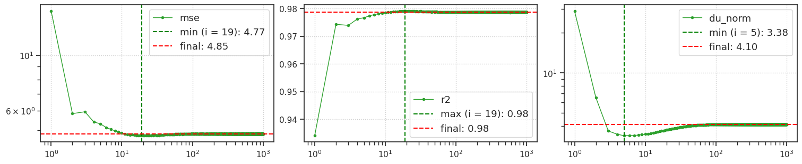
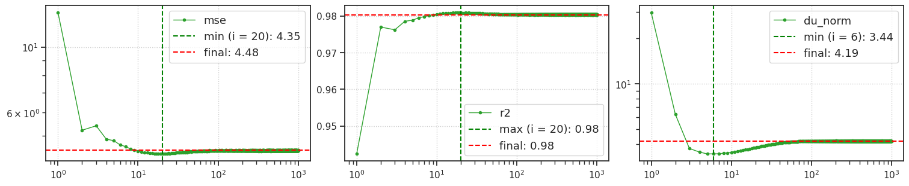
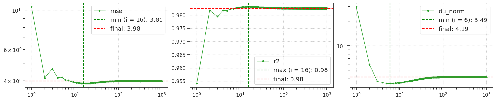
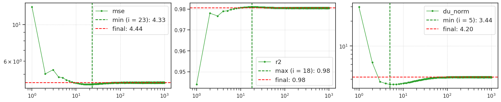

process fits, save results (iterative)#
host = any, device = cuda:1
Motivation:
From Dropbox/chkpts/_IterativeVAE to ../tmp/results_2025-04
Show code cell source
# HIDE CODE
import os, sys
from IPython.display import display
# tmp & extras dir
git_dir = os.path.join(os.environ['HOME'], 'Dropbox/git')
extras_dir = os.path.join(git_dir, 'jb-progress-2025/_extras')
fig_base_dir = os.path.join(git_dir, 'jb-progress-2025/figs')
tmp_dir = os.path.join(git_dir, 'jb-progress-2025/tmp')
# GitHub
sys.path.insert(0, os.path.join(git_dir, '_IterativeVAE'))
from figures.convergence import plot_convergence
from figures.imgs import plot_weights
from figures.fighelper import *
from main.train import *
# warnings, tqdm, & style
warnings.filterwarnings('ignore', category=DeprecationWarning)
warnings.filterwarnings('ignore', category=FutureWarning)
warnings.filterwarnings('ignore', category=UserWarning)
from rich.jupyter import print
%matplotlib inline
set_style()
from analysis.final import perform_analysis, get_root_path
device_idx = 1
device = f'cuda:{device_idx}'
print(f"device: {device} ——— host: {os.uname().nodename}")
device: cuda:1 ——— host: chewie
Results dir#
root = get_root_path()
results_dir = pjoin(tmp_dir, 'results_2025-04')
os.makedirs(results_dir, exist_ok=True)
len(os.listdir(results_dir))
131
Select fits#
fits = sorted(os.listdir(root), key=alphanum_sort_key)
# items = ['BALLS64', '2025_04']
fits = [
f for f in fits if
('BALLS64' in f and '2025_03' not in f)
# 'vH16-wht_t-32' in f
# all(e in f for e in items)
]
len(fits)
124
Run analysis loop#
%%time
perform_analysis(results_dir, device, fits)
0%| | 0/124 [00:00<?, ?it/s]
[PROGRESS] 'gaussian+relu_<grad|lin>_BALLS64_t-32_b-1_k-[96]_chewie-0_(2025_05_01,17:10).npy' saved at /home/hadi/Dropbox/git/jb-progress-2025/tmp/results_2025-04

----------------------------------------------------------------------------------------------------
6%|██▍ | 7/124 [02:31<42:04, 21.57s/it]
[PROGRESS] 'gaussian+relu_<grad|lin>_BALLS64_t-32_b-1_k-[96]_chewie-1_(2025_05_01,17:10).npy' saved at /home/hadi/Dropbox/git/jb-progress-2025/tmp/results_2025-04

----------------------------------------------------------------------------------------------------
6%|██▋ | 8/124 [05:02<1:24:13, 43.56s/it]
[PROGRESS] 'gaussian_<grad|lin>_BALLS64_t-32_b-1_k-[96]_mach-10_(2025_05_01,11:46).npy' saved at /home/hadi/Dropbox/git/jb-progress-2025/tmp/results_2025-04

----------------------------------------------------------------------------------------------------
16%|██████▊ | 20/124 [07:31<35:24, 20.43s/it]
[PROGRESS] 'gaussian_<grad|lin>_BALLS64_t-32_b-1_k-[96]_mach-11_(2025_05_01,11:46).npy' saved at /home/hadi/Dropbox/git/jb-progress-2025/tmp/results_2025-04

----------------------------------------------------------------------------------------------------
17%|███████ | 21/124 [10:00<52:59, 30.87s/it]
[PROGRESS] 'gaussian_<grad|lin>_BALLS64_t-32_b-1_k-[96]_mach-13_(2025_05_01,11:46).npy' saved at /home/hadi/Dropbox/git/jb-progress-2025/tmp/results_2025-04

----------------------------------------------------------------------------------------------------
18%|███████ | 22/124 [12:30<1:13:30, 43.24s/it]
[PROGRESS] 'gaussian_<grad|lin>_BALLS64_t-32_b-1_k-[96]_mach-14_(2025_05_01,11:46).npy' saved at /home/hadi/Dropbox/git/jb-progress-2025/tmp/results_2025-04

----------------------------------------------------------------------------------------------------
19%|███████▍ | 23/124 [15:00<1:36:05, 57.09s/it]
[PROGRESS] 'gaussian_<grad|lin>_BALLS64_t-32_b-1_k-[96]_mach-15_(2025_05_01,11:46).npy' saved at /home/hadi/Dropbox/git/jb-progress-2025/tmp/results_2025-04

----------------------------------------------------------------------------------------------------
19%|███████▋ | 24/124 [17:30<1:59:23, 71.63s/it]
[PROGRESS] 'gaussian_<grad|lin>_BALLS64_t-32_b-1_k-[96]_mach-17_(2025_05_01,11:46).npy' saved at /home/hadi/Dropbox/git/jb-progress-2025/tmp/results_2025-04

----------------------------------------------------------------------------------------------------
20%|████████ | 25/124 [20:00<2:21:32, 85.79s/it]
[PROGRESS] 'gaussian_<grad|lin>_BALLS64_t-32_b-1_k-[96]_mach-18_(2025_05_01,11:46).npy' saved at /home/hadi/Dropbox/git/jb-progress-2025/tmp/results_2025-04

----------------------------------------------------------------------------------------------------
21%|████████▍ | 26/124 [22:29<2:41:38, 98.96s/it]
[PROGRESS] 'gaussian_<grad|lin>_BALLS64_t-32_b-1_k-[96]_mach-19_(2025_05_01,11:46).npy' saved at /home/hadi/Dropbox/git/jb-progress-2025/tmp/results_2025-04

----------------------------------------------------------------------------------------------------
100%|█████████████████████████████████████████| 124/124 [24:58<00:00, 12.09s/it]
CPU times: user 36min 19s, sys: 1min 7s, total: 37min 26s
Wall time: 24min 58s
## Big 80 balls fits
0%| | 0/80 [00:00<?, ?it/s]
[PROGRESS] 'poisson_<grad|lin>_BALLS64_t-16_b-24_k-[96]_lr-0.0001_mach-400_(2025_04_29,23:11).npy' saved at /home/hadi/Dropbox/git/jb-progress-2025/tmp/results_2025-04

----------------------------------------------------------------------------------------------------
1%|▌ | 1/80 [05:53<7:44:57, 353.13s/it]
[PROGRESS] 'poisson_<grad|lin>_BALLS64_t-16_b-24_k-[96]_lr-0.0001_mach-401_(2025_04_29,23:11).npy' saved at /home/hadi/Dropbox/git/jb-progress-2025/tmp/results_2025-04

----------------------------------------------------------------------------------------------------
2%|█ | 2/80 [11:43<7:36:58, 351.52s/it]
[PROGRESS] 'poisson_<grad|lin>_BALLS64_t-16_b-24_k-[96]_lr-0.0001_mach-402_(2025_04_29,23:11).npy' saved at /home/hadi/Dropbox/git/jb-progress-2025/tmp/results_2025-04

----------------------------------------------------------------------------------------------------
4%|█▌ | 3/80 [17:39<7:33:48, 353.62s/it]
[PROGRESS] 'poisson_<grad|lin>_BALLS64_t-16_b-24_k-[96]_lr-0.0005_mach-400_(2025_04_29,23:11).npy' saved at /home/hadi/Dropbox/git/jb-progress-2025/tmp/results_2025-04

----------------------------------------------------------------------------------------------------
5%|██ | 4/80 [23:42<7:32:26, 357.20s/it]
[PROGRESS] 'poisson_<grad|lin>_BALLS64_t-16_b-24_k-[96]_lr-0.0005_mach-401_(2025_04_29,23:11).npy' saved at /home/hadi/Dropbox/git/jb-progress-2025/tmp/results_2025-04

----------------------------------------------------------------------------------------------------
6%|██▌ | 5/80 [29:24<7:19:50, 351.87s/it]
[PROGRESS] 'poisson_<grad|lin>_BALLS64_t-16_b-24_k-[96]_lr-0.0005_mach-402_(2025_04_29,23:11).npy' saved at /home/hadi/Dropbox/git/jb-progress-2025/tmp/results_2025-04

----------------------------------------------------------------------------------------------------
8%|███ | 6/80 [35:43<7:25:06, 360.90s/it]
[PROGRESS] 'poisson_<grad|lin>_BALLS64_t-16_b-24_k-[128]_lr-0.0001_mach-400_(2025_04_29,23:11).npy' saved at /home/hadi/Dropbox/git/jb-progress-2025/tmp/results_2025-04

----------------------------------------------------------------------------------------------------
9%|███▌ | 7/80 [41:42<7:18:38, 360.53s/it]
[PROGRESS] 'poisson_<grad|lin>_BALLS64_t-16_b-24_k-[128]_lr-0.0001_mach-401_(2025_04_29,23:11).npy' saved at /home/hadi/Dropbox/git/jb-progress-2025/tmp/results_2025-04

----------------------------------------------------------------------------------------------------
10%|████ | 8/80 [47:35<7:09:26, 357.86s/it]
[PROGRESS] 'poisson_<grad|lin>_BALLS64_t-16_b-24_k-[128]_lr-0.0001_mach-402_(2025_04_29,23:11).npy' saved at /home/hadi/Dropbox/git/jb-progress-2025/tmp/results_2025-04

----------------------------------------------------------------------------------------------------
11%|████▌ | 9/80 [53:40<7:06:14, 360.20s/it]
[PROGRESS] 'poisson_<grad|lin>_BALLS64_t-16_b-24_k-[128]_lr-0.0005_mach-400_(2025_04_29,23:11).npy' saved at /home/hadi/Dropbox/git/jb-progress-2025/tmp/results_2025-04

----------------------------------------------------------------------------------------------------
12%|█████ | 10/80 [59:44<7:01:32, 361.32s/it]
[PROGRESS] 'poisson_<grad|lin>_BALLS64_t-16_b-24_k-[128]_lr-0.0005_mach-401_(2025_04_29,23:11).npy' saved at /home/hadi/Dropbox/git/jb-progress-2025/tmp/results_2025-04

----------------------------------------------------------------------------------------------------
14%|█████▏ | 11/80 [1:06:02<7:01:18, 366.35s/it]
[PROGRESS] 'poisson_<grad|lin>_BALLS64_t-16_b-24_k-[128]_lr-0.0005_mach-402_(2025_04_29,23:11).npy' saved at /home/hadi/Dropbox/git/jb-progress-2025/tmp/results_2025-04

----------------------------------------------------------------------------------------------------
15%|█████▋ | 12/80 [1:12:26<7:01:16, 371.72s/it]
[PROGRESS] 'poisson_<grad|lin>_BALLS64_t-32_b-96_k-[96]_lowlr_chewie-400_(2025_04_29,23:00).npy' saved at /home/hadi/Dropbox/git/jb-progress-2025/tmp/results_2025-04

----------------------------------------------------------------------------------------------------
16%|██████▏ | 13/80 [1:18:18<6:48:28, 365.79s/it]
[PROGRESS] 'poisson_<grad|lin>_BALLS64_t-32_b-96_k-[96]_lowlr_chewie-401_(2025_04_29,23:00).npy' saved at /home/hadi/Dropbox/git/jb-progress-2025/tmp/results_2025-04

----------------------------------------------------------------------------------------------------
18%|██████▋ | 14/80 [1:24:20<6:41:18, 364.83s/it]
[PROGRESS] 'poisson_<grad|lin>_BALLS64_t-32_b-96_k-[96]_lowlr_chewie-402_(2025_04_29,23:00).npy' saved at /home/hadi/Dropbox/git/jb-progress-2025/tmp/results_2025-04

----------------------------------------------------------------------------------------------------
19%|███████▏ | 15/80 [1:30:20<6:33:34, 363.30s/it]
[PROGRESS] 'poisson_<grad|lin>_BALLS64_t-32_b-96_k-[96]_lowlr_chewie-403_(2025_04_29,23:00).npy' saved at /home/hadi/Dropbox/git/jb-progress-2025/tmp/results_2025-04

----------------------------------------------------------------------------------------------------
20%|███████▌ | 16/80 [1:36:26<6:28:16, 364.00s/it]
[PROGRESS] 'poisson_<grad|lin>_BALLS64_t-32_b-96_k-[96]_lr-0.0005_cpois-6.0_cdec-3.45_chewie-503_(2025_04_30,17:42).npy' saved at /home/hadi/Dropbox/git/jb-progress-2025/tmp/results_2025-04

----------------------------------------------------------------------------------------------------
21%|████████ | 17/80 [1:42:04<6:14:09, 356.34s/it]
[PROGRESS] 'poisson_<grad|lin>_BALLS64_t-32_b-96_k-[96]_lr-0.0005_cpois-6.0_cdec-3.45_chewie-504_(2025_04_30,17:42).npy' saved at /home/hadi/Dropbox/git/jb-progress-2025/tmp/results_2025-04

----------------------------------------------------------------------------------------------------
22%|████████▌ | 18/80 [1:48:16<6:13:02, 361.00s/it]
[PROGRESS] 'poisson_<grad|lin>_BALLS64_t-32_b-96_k-[96]_lr-0.0005_cpois-6.0_cdec-3.45_mach-500_(2025_04_30,17:41).npy' saved at /home/hadi/Dropbox/git/jb-progress-2025/tmp/results_2025-04

----------------------------------------------------------------------------------------------------
24%|█████████ | 19/80 [1:53:56<6:00:32, 354.62s/it]
[PROGRESS] 'poisson_<grad|lin>_BALLS64_t-32_b-96_k-[96]_lr-0.0005_cpois-6.0_cdec-3.45_mach-501_(2025_04_30,17:41).npy' saved at /home/hadi/Dropbox/git/jb-progress-2025/tmp/results_2025-04

----------------------------------------------------------------------------------------------------
25%|█████████▌ | 20/80 [2:00:10<6:00:22, 360.38s/it]
[PROGRESS] 'poisson_<grad|lin>_BALLS64_t-32_b-96_k-[96]_lr-0.0005_cpois-6.0_cdec-3.45_mach-502_(2025_04_30,17:41).npy' saved at /home/hadi/Dropbox/git/jb-progress-2025/tmp/results_2025-04

----------------------------------------------------------------------------------------------------
26%|█████████▉ | 21/80 [2:06:08<5:53:43, 359.72s/it]
[PROGRESS] 'poisson_<grad|lin>_BALLS64_t-32_b-96_k-[96]_mach-60_(2025_04_27,18:19).npy' saved at /home/hadi/Dropbox/git/jb-progress-2025/tmp/results_2025-04

----------------------------------------------------------------------------------------------------
28%|██████████▍ | 22/80 [2:11:32<5:37:19, 348.96s/it]
[PROGRESS] 'poisson_<grad|lin>_BALLS64_t-32_b-96_k-[96]_mach-61_(2025_04_27,18:19).npy' saved at /home/hadi/Dropbox/git/jb-progress-2025/tmp/results_2025-04

----------------------------------------------------------------------------------------------------
29%|██████████▉ | 23/80 [2:17:21<5:31:42, 349.17s/it]
[PROGRESS] 'poisson_<grad|lin>_BALLS64_t-32_b-96_k-[96]_mach-62_(2025_04_27,18:19).npy' saved at /home/hadi/Dropbox/git/jb-progress-2025/tmp/results_2025-04

----------------------------------------------------------------------------------------------------
30%|███████████▍ | 24/80 [2:23:33<5:32:04, 355.79s/it]
[PROGRESS] 'poisson_<grad|lin>_BALLS64_t-32_b-96_k-[96]_mach-63_(2025_04_28,02:08).npy' saved at /home/hadi/Dropbox/git/jb-progress-2025/tmp/results_2025-04

----------------------------------------------------------------------------------------------------
31%|███████████▉ | 25/80 [2:29:50<5:31:57, 362.14s/it]
[PROGRESS] 'poisson_<grad|lin>_BALLS64_t-32_b-96_k-[96]_mach-64_(2025_04_28,02:08).npy' saved at /home/hadi/Dropbox/git/jb-progress-2025/tmp/results_2025-04

----------------------------------------------------------------------------------------------------
32%|████████████▎ | 26/80 [2:35:50<5:25:34, 361.74s/it]
[PROGRESS] 'poisson_<grad|lin>_BALLS64_t-32_b-96_k-[96]_mach-65_(2025_04_28,02:12).npy' saved at /home/hadi/Dropbox/git/jb-progress-2025/tmp/results_2025-04

----------------------------------------------------------------------------------------------------
34%|████████████▊ | 27/80 [2:42:10<5:24:13, 367.04s/it]
[PROGRESS] 'poisson_<grad|lin>_BALLS64_t-32_b-96_k-[96]_mach-66_(2025_04_28,09:47).npy' saved at /home/hadi/Dropbox/git/jb-progress-2025/tmp/results_2025-04

----------------------------------------------------------------------------------------------------
35%|█████████████▎ | 28/80 [2:48:36<5:23:08, 372.86s/it]
[PROGRESS] 'poisson_<grad|lin>_BALLS64_t-32_b-96_k-[96]_mach-67_(2025_04_28,09:47).npy' saved at /home/hadi/Dropbox/git/jb-progress-2025/tmp/results_2025-04

----------------------------------------------------------------------------------------------------
36%|█████████████▊ | 29/80 [2:54:44<5:15:46, 371.49s/it]
[PROGRESS] 'poisson_<grad|lin>_BALLS64_t-32_b-96_k-[96]_mach-68_(2025_04_28,10:04).npy' saved at /home/hadi/Dropbox/git/jb-progress-2025/tmp/results_2025-04

----------------------------------------------------------------------------------------------------
38%|██████████████▎ | 30/80 [3:01:00<5:10:38, 372.77s/it]
[PROGRESS] 'poisson_<grad|lin>_BALLS64_t-32_b-96_k-[96]_mach-69_(2025_04_28,17:21).npy' saved at /home/hadi/Dropbox/git/jb-progress-2025/tmp/results_2025-04

----------------------------------------------------------------------------------------------------
39%|██████████████▋ | 31/80 [3:07:22<5:06:41, 375.54s/it]
[PROGRESS] 'poisson_<grad|lin>_BALLS64_t-32_b-96_k-[96]_mach-70_(2025_04_28,17:28).npy' saved at /home/hadi/Dropbox/git/jb-progress-2025/tmp/results_2025-04

----------------------------------------------------------------------------------------------------
40%|███████████████▏ | 32/80 [3:13:37<5:00:13, 375.28s/it]
[PROGRESS] 'poisson_<grad|lin>_BALLS64_t-32_b-96_k-[96]_mach-71_(2025_04_28,17:52).npy' saved at /home/hadi/Dropbox/git/jb-progress-2025/tmp/results_2025-04

----------------------------------------------------------------------------------------------------
41%|███████████████▋ | 33/80 [3:19:53<4:54:15, 375.64s/it]
[PROGRESS] 'poisson_<grad|lin>_BALLS64_t-32_b-96_k-[96]_mach-72_(2025_04_27,18:19).npy' saved at /home/hadi/Dropbox/git/jb-progress-2025/tmp/results_2025-04

----------------------------------------------------------------------------------------------------
42%|████████████████▏ | 34/80 [3:26:10<4:48:06, 375.79s/it]
[PROGRESS] 'poisson_<grad|lin>_BALLS64_t-32_b-96_k-[96]_mach-73_(2025_04_27,18:19).npy' saved at /home/hadi/Dropbox/git/jb-progress-2025/tmp/results_2025-04

----------------------------------------------------------------------------------------------------
44%|████████████████▋ | 35/80 [3:32:22<4:41:06, 374.81s/it]
[PROGRESS] 'poisson_<grad|lin>_BALLS64_t-32_b-96_k-[96]_mach-74_(2025_04_27,18:19).npy' saved at /home/hadi/Dropbox/git/jb-progress-2025/tmp/results_2025-04

----------------------------------------------------------------------------------------------------
45%|█████████████████ | 36/80 [3:38:35<4:34:29, 374.31s/it]
[PROGRESS] 'poisson_<grad|lin>_BALLS64_t-32_b-96_k-[96]_mach-75_(2025_04_28,02:02).npy' saved at /home/hadi/Dropbox/git/jb-progress-2025/tmp/results_2025-04

----------------------------------------------------------------------------------------------------
46%|█████████████████▌ | 37/80 [3:44:56<4:29:45, 376.40s/it]
[PROGRESS] 'poisson_<grad|lin>_BALLS64_t-32_b-96_k-[96]_mach-76_(2025_04_28,01:56).npy' saved at /home/hadi/Dropbox/git/jb-progress-2025/tmp/results_2025-04

----------------------------------------------------------------------------------------------------
48%|██████████████████ | 38/80 [3:51:11<4:22:59, 375.70s/it]
[PROGRESS] 'poisson_<grad|lin>_BALLS64_t-32_b-96_k-[96]_mach-77_(2025_04_28,02:07).npy' saved at /home/hadi/Dropbox/git/jb-progress-2025/tmp/results_2025-04

----------------------------------------------------------------------------------------------------
49%|██████████████████▌ | 39/80 [3:57:24<4:16:15, 375.00s/it]
[PROGRESS] 'poisson_<grad|lin>_BALLS64_t-32_b-96_k-[96]_mach-78_(2025_04_28,09:56).npy' saved at /home/hadi/Dropbox/git/jb-progress-2025/tmp/results_2025-04

----------------------------------------------------------------------------------------------------
50%|███████████████████ | 40/80 [4:03:54<4:13:00, 379.51s/it]
[PROGRESS] 'poisson_<grad|lin>_BALLS64_t-32_b-96_k-[96]_mach-79_(2025_04_28,09:45).npy' saved at /home/hadi/Dropbox/git/jb-progress-2025/tmp/results_2025-04

----------------------------------------------------------------------------------------------------
51%|███████████████████▍ | 41/80 [4:10:06<4:05:13, 377.26s/it]
[PROGRESS] 'poisson_<grad|lin>_BALLS64_t-32_b-96_k-[96]_mach-80_(2025_04_28,09:59).npy' saved at /home/hadi/Dropbox/git/jb-progress-2025/tmp/results_2025-04

----------------------------------------------------------------------------------------------------
52%|███████████████████▉ | 42/80 [4:16:28<3:59:51, 378.74s/it]
[PROGRESS] 'poisson_<grad|lin>_BALLS64_t-32_b-96_k-[96]_mach-81_(2025_04_28,17:44).npy' saved at /home/hadi/Dropbox/git/jb-progress-2025/tmp/results_2025-04

----------------------------------------------------------------------------------------------------
54%|████████████████████▍ | 43/80 [4:22:52<3:54:25, 380.16s/it]
[PROGRESS] 'poisson_<grad|lin>_BALLS64_t-32_b-96_k-[96]_mach-82_(2025_04_28,17:30).npy' saved at /home/hadi/Dropbox/git/jb-progress-2025/tmp/results_2025-04

----------------------------------------------------------------------------------------------------
55%|████████████████████▉ | 44/80 [4:29:06<3:47:07, 378.55s/it]
[PROGRESS] 'poisson_<grad|lin>_BALLS64_t-32_b-96_k-[96]_mach-83_(2025_04_28,17:34).npy' saved at /home/hadi/Dropbox/git/jb-progress-2025/tmp/results_2025-04

----------------------------------------------------------------------------------------------------
56%|█████████████████████▍ | 45/80 [4:35:24<3:40:42, 378.36s/it]
[PROGRESS] 'poisson_<grad|lin>_BALLS64_t-32_b-96_k-[96]_yoru-100_(2025_04_27,18:27).npy' saved at /home/hadi/Dropbox/git/jb-progress-2025/tmp/results_2025-04

----------------------------------------------------------------------------------------------------
57%|█████████████████████▊ | 46/80 [4:41:51<3:35:53, 381.00s/it]
[PROGRESS] 'poisson_<grad|lin>_BALLS64_t-32_b-96_k-[96]_yoru-101_(2025_04_27,18:27).npy' saved at /home/hadi/Dropbox/git/jb-progress-2025/tmp/results_2025-04

----------------------------------------------------------------------------------------------------
59%|██████████████████████▎ | 47/80 [4:48:10<3:29:08, 380.26s/it]
[PROGRESS] 'poisson_<grad|lin>_BALLS64_t-32_b-96_k-[96]_yoru-102_(2025_04_28,09:12).npy' saved at /home/hadi/Dropbox/git/jb-progress-2025/tmp/results_2025-04

----------------------------------------------------------------------------------------------------
60%|██████████████████████▊ | 48/80 [4:54:56<3:26:56, 388.01s/it]
[PROGRESS] 'poisson_<grad|lin>_BALLS64_t-32_b-96_k-[96]_yoru-103_(2025_04_28,09:10).npy' saved at /home/hadi/Dropbox/git/jb-progress-2025/tmp/results_2025-04

----------------------------------------------------------------------------------------------------
61%|███████████████████████▎ | 49/80 [5:01:14<3:18:56, 385.06s/it]
[PROGRESS] 'poisson_<grad|lin>_BALLS64_t-32_b-96_k-[96]_yoru-104_(2025_04_29,00:09).npy' saved at /home/hadi/Dropbox/git/jb-progress-2025/tmp/results_2025-04

----------------------------------------------------------------------------------------------------
62%|███████████████████████▊ | 50/80 [5:07:15<3:08:50, 377.68s/it]
[PROGRESS] 'poisson_<grad|lin>_BALLS64_t-32_b-96_k-[96]_yoru-105_(2025_04_28,23:47).npy' saved at /home/hadi/Dropbox/git/jb-progress-2025/tmp/results_2025-04

----------------------------------------------------------------------------------------------------
64%|████████████████████████▏ | 51/80 [5:13:46<3:04:31, 381.78s/it]
[PROGRESS] 'poisson_<grad|lin>_BALLS64_t-32_b-96_k-[96]_yoru-106_(2025_04_29,14:59).npy' saved at /home/hadi/Dropbox/git/jb-progress-2025/tmp/results_2025-04

----------------------------------------------------------------------------------------------------
65%|████████████████████████▋ | 52/80 [5:20:06<2:57:54, 381.24s/it]
[PROGRESS] 'poisson_<grad|lin>_BALLS64_t-32_b-96_k-[96]_yoru-107_(2025_04_29,14:26).npy' saved at /home/hadi/Dropbox/git/jb-progress-2025/tmp/results_2025-04

----------------------------------------------------------------------------------------------------
66%|█████████████████████████▏ | 53/80 [5:26:25<2:51:14, 380.52s/it]
[PROGRESS] 'poisson_<grad|lin>_BALLS64_t-32_b-96_k-[96]_yoru-108_(2025_04_27,18:27).npy' saved at /home/hadi/Dropbox/git/jb-progress-2025/tmp/results_2025-04

----------------------------------------------------------------------------------------------------
68%|█████████████████████████▋ | 54/80 [5:32:46<2:44:55, 380.58s/it]
[PROGRESS] 'poisson_<grad|lin>_BALLS64_t-32_b-96_k-[96]_yoru-109_(2025_04_27,18:27).npy' saved at /home/hadi/Dropbox/git/jb-progress-2025/tmp/results_2025-04

----------------------------------------------------------------------------------------------------
69%|██████████████████████████▏ | 55/80 [5:39:01<2:37:57, 379.11s/it]
[PROGRESS] 'poisson_<grad|lin>_BALLS64_t-32_b-96_k-[96]_yoru-111_(2025_04_28,09:10).npy' saved at /home/hadi/Dropbox/git/jb-progress-2025/tmp/results_2025-04

----------------------------------------------------------------------------------------------------
70%|██████████████████████████▌ | 56/80 [5:45:14<2:30:53, 377.24s/it]
[PROGRESS] 'poisson_<grad|lin>_BALLS64_t-32_b-96_k-[96]_yoru-112_(2025_04_28,10:48).npy' saved at /home/hadi/Dropbox/git/jb-progress-2025/tmp/results_2025-04

----------------------------------------------------------------------------------------------------
71%|███████████████████████████ | 57/80 [5:50:37<2:18:18, 360.81s/it]
[PROGRESS] 'poisson_<grad|lin>_BALLS64_t-32_b-96_k-[96]_yoru-113_(2025_04_28,23:47).npy' saved at /home/hadi/Dropbox/git/jb-progress-2025/tmp/results_2025-04

----------------------------------------------------------------------------------------------------
72%|███████████████████████████▌ | 58/80 [5:56:58<2:14:34, 367.02s/it]
[PROGRESS] 'poisson_<grad|lin>_BALLS64_t-32_b-96_k-[96]_yoru-114_(2025_04_29,01:26).npy' saved at /home/hadi/Dropbox/git/jb-progress-2025/tmp/results_2025-04

----------------------------------------------------------------------------------------------------
74%|████████████████████████████ | 59/80 [6:03:32<2:11:19, 375.21s/it]
[PROGRESS] 'poisson_<grad|lin>_BALLS64_t-32_b-96_k-[96]_yoru-115_(2025_04_29,14:26).npy' saved at /home/hadi/Dropbox/git/jb-progress-2025/tmp/results_2025-04

----------------------------------------------------------------------------------------------------
75%|████████████████████████████▌ | 60/80 [6:10:30<2:09:20, 388.00s/it]
[PROGRESS] 'poisson_<grad|lin>_BALLS64_t-32_b-96_k-[128]_lr-0.0005_cpois-4.5_cdec-2.3_chewie-500_(2025_04_30,10:38).npy' saved at /home/hadi/Dropbox/git/jb-progress-2025/tmp/results_2025-04

----------------------------------------------------------------------------------------------------
76%|████████████████████████████▉ | 61/80 [6:18:00<2:08:42, 406.46s/it]
[PROGRESS] 'poisson_<grad|lin>_BALLS64_t-32_b-96_k-[128]_lr-0.0005_cpois-4.5_cdec-2.3_chewie-501_(2025_04_30,10:38).npy' saved at /home/hadi/Dropbox/git/jb-progress-2025/tmp/results_2025-04

----------------------------------------------------------------------------------------------------
78%|█████████████████████████████▍ | 62/80 [6:24:25<1:59:59, 399.95s/it]
[PROGRESS] 'poisson_<grad|lin>_BALLS64_t-32_b-96_k-[128]_mach-10_(2025_04_27,10:53).npy' saved at /home/hadi/Dropbox/git/jb-progress-2025/tmp/results_2025-04

----------------------------------------------------------------------------------------------------
79%|█████████████████████████████▉ | 63/80 [6:31:13<1:54:04, 402.59s/it]
[PROGRESS] 'poisson_<grad|lin>_BALLS64_t-32_b-96_k-[128]_mach-11_(2025_04_27,10:53).npy' saved at /home/hadi/Dropbox/git/jb-progress-2025/tmp/results_2025-04

----------------------------------------------------------------------------------------------------
80%|██████████████████████████████▍ | 64/80 [6:37:38<1:45:56, 397.27s/it]
[PROGRESS] 'poisson_<grad|lin>_BALLS64_t-32_b-128_k-[96]_yoru-11_(2025_04_17,23:04).npy' saved at /home/hadi/Dropbox/git/jb-progress-2025/tmp/results_2025-04

----------------------------------------------------------------------------------------------------
81%|██████████████████████████████▉ | 65/80 [6:44:04<1:38:29, 393.95s/it]
[PROGRESS] 'poisson_<grad|lin>_BALLS64_t-32_b-128_k-[96]_yoru-12_(2025_04_18,00:40).npy' saved at /home/hadi/Dropbox/git/jb-progress-2025/tmp/results_2025-04

----------------------------------------------------------------------------------------------------
82%|███████████████████████████████▎ | 66/80 [6:50:23<1:30:52, 389.45s/it]
[PROGRESS] 'poisson_<grad|lin>_BALLS64_t-32_b-128_k-[96]_yoru-13_(2025_04_17,23:04).npy' saved at /home/hadi/Dropbox/git/jb-progress-2025/tmp/results_2025-04

----------------------------------------------------------------------------------------------------
84%|███████████████████████████████▊ | 67/80 [6:56:43<1:23:45, 386.57s/it]
[PROGRESS] 'poisson_<grad|lin>_BALLS64_t-32_b-128_k-[96]_yoru-14_(2025_04_17,23:04).npy' saved at /home/hadi/Dropbox/git/jb-progress-2025/tmp/results_2025-04

----------------------------------------------------------------------------------------------------
85%|████████████████████████████████▎ | 68/80 [7:03:14<1:17:33, 387.79s/it]
[PROGRESS] 'poisson_<grad|lin>_BALLS64_t-32_b-128_k-[96]_yoru-100_(2025_04_18,18:49).npy' saved at /home/hadi/Dropbox/git/jb-progress-2025/tmp/results_2025-04

----------------------------------------------------------------------------------------------------
86%|████████████████████████████████▊ | 69/80 [7:09:37<1:10:49, 386.31s/it]
[PROGRESS] 'poisson_<grad|lin>_BALLS64_t-32_b-128_k-[96]_yoru-140_(2025_04_18,18:49).npy' saved at /home/hadi/Dropbox/git/jb-progress-2025/tmp/results_2025-04

----------------------------------------------------------------------------------------------------
88%|█████████████████████████████████▎ | 70/80 [7:15:59<1:04:11, 385.19s/it]
[PROGRESS] 'poisson_<grad|lin>_BALLS64_t-32_b-192_k-[96]_mach-10_(2025_04_25,21:56).npy' saved at /home/hadi/Dropbox/git/jb-progress-2025/tmp/results_2025-04

----------------------------------------------------------------------------------------------------
89%|███████████████████████████████████▌ | 71/80 [7:22:22<57:39, 384.37s/it]
[PROGRESS] 'poisson_<grad|lin>_BALLS64_t-32_b-192_k-[96]_mach-11_(2025_04_25,21:56).npy' saved at /home/hadi/Dropbox/git/jb-progress-2025/tmp/results_2025-04

----------------------------------------------------------------------------------------------------
90%|████████████████████████████████████ | 72/80 [7:28:53<51:31, 386.43s/it]
[PROGRESS] 'poisson_<grad|lin>_BALLS64_t-32_b-192_k-[96]_mach-12_(2025_04_26,04:49).npy' saved at /home/hadi/Dropbox/git/jb-progress-2025/tmp/results_2025-04

----------------------------------------------------------------------------------------------------
91%|████████████████████████████████████▌ | 73/80 [7:35:19<45:04, 386.40s/it]
[PROGRESS] 'poisson_<grad|lin>_BALLS64_t-32_b-192_k-[96]_mach-13_(2025_04_25,21:56).npy' saved at /home/hadi/Dropbox/git/jb-progress-2025/tmp/results_2025-04

----------------------------------------------------------------------------------------------------
92%|█████████████████████████████████████ | 74/80 [7:41:24<37:58, 379.74s/it]
[PROGRESS] 'poisson_<grad|lin>_BALLS64_t-32_b-192_k-[96]_mach-14_(2025_04_25,21:56).npy' saved at /home/hadi/Dropbox/git/jb-progress-2025/tmp/results_2025-04

----------------------------------------------------------------------------------------------------
94%|█████████████████████████████████████▌ | 75/80 [7:48:04<32:09, 385.86s/it]
[PROGRESS] 'poisson_<grad|lin>_BALLS64_t-32_b-256_k-[128]_mach-10_(2025_04_26,17:36).npy' saved at /home/hadi/Dropbox/git/jb-progress-2025/tmp/results_2025-04

----------------------------------------------------------------------------------------------------
95%|██████████████████████████████████████ | 76/80 [7:54:20<25:32, 383.10s/it]
[PROGRESS] 'poisson_<grad|lin>_BALLS64_t-32_b-256_k-[128]_mach-11_(2025_04_26,17:36).npy' saved at /home/hadi/Dropbox/git/jb-progress-2025/tmp/results_2025-04

----------------------------------------------------------------------------------------------------
96%|██████████████████████████████████████▌ | 77/80 [8:00:38<19:04, 381.34s/it]
[PROGRESS] 'poisson_<grad|lin>_BALLS64_t-32_b-256_k-[128]_mach-12_(2025_04_26,17:36).npy' saved at /home/hadi/Dropbox/git/jb-progress-2025/tmp/results_2025-04

----------------------------------------------------------------------------------------------------
98%|███████████████████████████████████████ | 78/80 [8:07:16<12:53, 386.57s/it]
[PROGRESS] 'poisson_<grad|lin>_BALLS64_t-32_b-256_k-[128]_mach-13_(2025_04_26,17:36).npy' saved at /home/hadi/Dropbox/git/jb-progress-2025/tmp/results_2025-04

----------------------------------------------------------------------------------------------------
99%|███████████████████████████████████████▌| 79/80 [8:13:34<06:23, 383.85s/it]
[PROGRESS] 'poisson_<grad|lin>_BALLS64_t-32_b-256_k-[128]_mach-14_(2025_04_26,17:36).npy' saved at /home/hadi/Dropbox/git/jb-progress-2025/tmp/results_2025-04

----------------------------------------------------------------------------------------------------
100%|████████████████████████████████████████| 80/80 [8:19:58<00:00, 374.99s/it]
CPU times: user 10h 1min 43s, sys: 10min 6s, total: 10h 11min 49s
Wall time: 8h 19min 58s